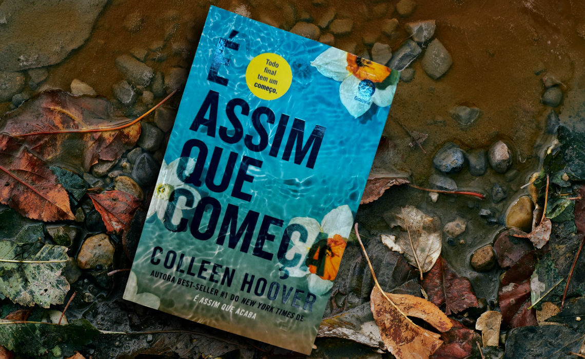
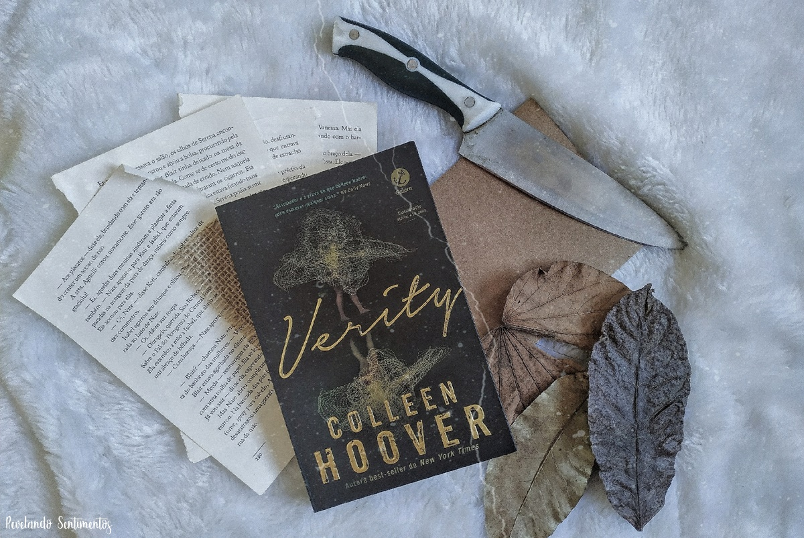

O amor não é óbvio
O amor não é óbvio. Ele está presente quando você se senta com a sua vizinha idosa para assistir a um novo capítulo da sua novela favorita. Ele é posto à prova quando você escuta as histórias mirabolantes da sua melhor amiga, ainda que nenhuma delas lhe interesse. E, às vezes, ele aparece quando você menos espera e te leva a fazer experimentos científicos munida de binóculos e uma bicicleta amarela.
Por lugares incríveis

Violet Markey tinha uma vida perfeita, mas todos os seus planos deixam de fazer sentido quando ela e a irmã sofrem um acidente de carro e apenas Violet sobrevive. Sentindo-se culpada pelo que aconteceu, a garota se afasta de todos e tenta descobrir como seguir em frente. Theodore Finch é o esquisito da escola, perseguido pelos valentões e chamado de “aberração” por onde passa. Para piorar, é obrigado a lidar com longos períodos de depressão, o pai violento e a apatia do resto da família.
Um de nós está mentindo
Numa tarde de segunda-feira, cinco estudantes do colégio Bayview entram na sala de detenção: Bronwyn, a gênia, comprometida a estudar em Yale, nunca quebra as regras. Addy, a bela, a perfeita definição da princesa do baile de primavera. Nate, o criminoso. Cooper, o atleta. E Simon, o pária, criador do mais famoso aplicativo de fofocas da escola. Só que Simon não consegue ir embora. Antes do fim da detenção, ele está morto. E, de acordo com os investigadores, a sua morte não foi acidental.
É assim que acaba
Em É assim que acaba, Colleen Hoover nos apresenta Lily, uma jovem que se mudou de uma cidadezinha do Maine para Boston, se formou em marketing e abriu a própria floricultura. E é em um dos terraços de Boston que ela conhece Ryle, um neurocirurgião confiante, teimoso e talvez até um pouco arrogante, com uma grande aversão a relacionamentos, mas que se sente muito atraído por ela.
É assim que começa
Quando Lily esbarra em Atlas ― com quem não fala há quase dois anos ―, parece que finalmente chegou o momento de retomar o relacionamento da adolescência, já que ele também está solteiro parece retribuir os sentimentos de Lily. Mas apesar de divorciada, Lily não está exatamente livre de Ryle. Culpando Atlas pelo fim de seu casamento, Ryle não está nada disposto a aceitar o novo relacionamento de Lily, ainda mais com Atlas, o último homem que aceitaria ver perto de sua filha e da ex-esposa.
Verity
Verity Crawford é a autora best-seller por trás de uma série de sucesso. Ela está no auge de sua carreira, aclamada pela crítica e pelo público, no entanto, um súbito e terrível acidente acaba interrompendo suas atividades, deixando-a sem condições de concluir a história... E é nessa complexa circunstância que surge Lowen Ashleigh, uma escritora à beira da falência convidada a escrever, sob um pseudônimo, os três livros restantes da já consolidada série.